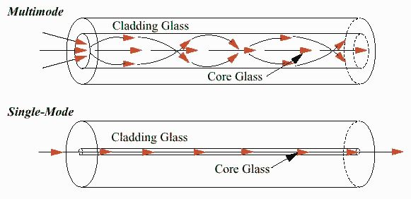

Coaxial cable has a central core conductor of solid or standard wire (Usually copper) enclosed in an insulating sheath, which is, in turn encased in an outer conductor of metal foil, braid, or a combination of the two (also usually copper). The outer metallic wrapping serves both as a shield against noise and as a second conductor. This outer conductor is also enclosed in an insulating sheath.
A twisted pair cable consists of four pairs of thin copper wires coated with PVC or Teflon, Spiralled around one another. The spiraling results in the cancellation of the effect of EMI. The twisted pair cables used in LANs is of the following types
UTP cables are most commonly used communication medium in LANs. Of the four pairs in a UTP cable, only two pairs are actually used for communication.
The Electronic Industries Association (EIA) has developed standards to grade UTP cable by quality.
has an extra layer of metal foil present between the twisted pairs if copper wires and the outer sheath. The purpose of this layer is to provide additional protection from EMI and RFI.
STP is more expensive than UTP and is generally used in networks where cables pass closer to devices that cause high EMI.
Optical fiber cables transmit data in the form of a light. Optical fiber cable contains long thin strands of pure glass, called the fiber, with each strand having a diameter of about 5 microns.
The Optical Fiber cable consists of the following three components:
Core:The core contains the optical fiber conductor (Glass or Plastic) that transmit data.
Cladding:The core is surrounded by another optical material. The function of cladding is to reflect the light back into the core.
Sheath or Outer Jacket:The core are cladding are covered with a sheath, usually made of plastic, to protect the fiber from damage.
 Multi-Mode Transmission:A mode is defined as the angle at which a ray of light enters the core of the optical fiber cable. If the light enters the core at different angles, it is called multi-mode transmission. Multi-mode transmission occurs when an LED is used as the light source.
Disadvantage of Multi-mode transmission is the collision of light beams due to dispersion and reflection. These collisions weaken the signal strength, resulting in attenuation.
SINGLE-MODE TRANSMISSION:In single mode transmission ILD is used to emit a light beam (laser) that carries data. ILD is an extremely concentrated light source and therefore the laser beams do not disperse when traveling through the fiber. In addition, the beams do not collide, thereby preventing any attenuation of the light signals.
The equipment required for single mode transmission such as the grade of fiber used and the ILD are expensive. Therefore single-mode transmissions are used to connect large WANs spanning a country or a continent.
Connectors act as an interface between NIC of the computer and the cable that transmits the signal.
To connect a coaxial cable to an NIC, The following connectors are required
BNC stands for Bayonet Network Connector (BNC)
UTP Connector: The most commonly used UTP connector is a RJ 45 connector with eight conductors, one for each wire of four twisted pair.STP cable uses a D-Shell (or DB-9) connector.
Optical fiber cables use either Screw Mounted Adapter (SMA) or Spring load twist (ST) Connectors. ST connectors are more popular than SMA connectors.